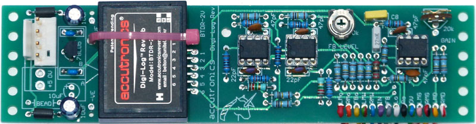
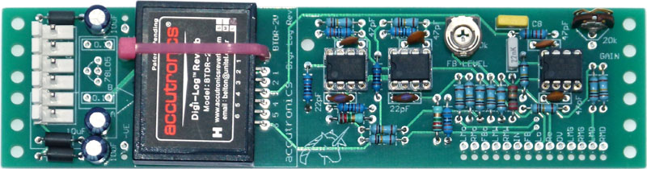
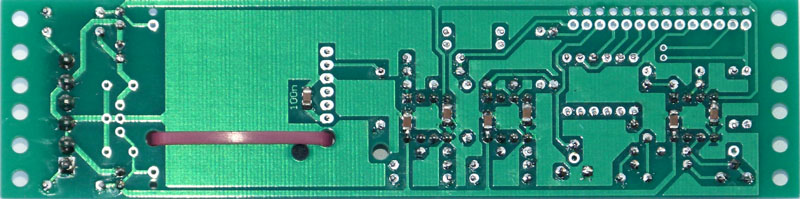

|

This is a basic reverb module constructed around the Belton BTDR-2H Reverb Module (Available from SmallBear Electronics). From a single input, two channels of raw reverb are generated. Mix outputs are also provided, allowing the input/reverb mix to be controlled via a panel pot. An additional feedback function is provided for emphasizing the effect, or even for generating screaming feedback. Video demo of prototype unit. A little on how it works:
C8, R3 and R4 are part of a high pass filter and gain recovery circuit. The values of these parts determine how "tinny" the reverb sounds. The http://www.accutronicsreverb.com/ web site has further details, a data sheet and so on.
If you do not require this high pass filter, short out C8. My prototype uses R3=100k, R4=15k, C8=10n(0.01μF). A 20k trimmer in series with R4 allows for gain adjustment. The Belton BTDR-2H Reverb Module comes in three different delay lengths. Select the one that sounds most useful to you. I chose one medium delay and one long delay for my prototypes. The 22pF capacitors marked * are to prevent the op-amps from oscillating, however, due to the high value of the feedback resistor, the form a low pass filter. At 22pF, the effect is fairly insignificant. If you have an oscilloscope and can check these outputs, you may try omitting the 22pF capacitors.
Construction
Before you start assembly, check the board for etching faults. Look for any shorts between tracks, or open circuits due to over etching. Take this opportunity to sand the edges of the board if needed, removing any splinters or rough edges. When you are happy with the printed circuit board, construction can proceed as normal, starting with low profile components such as resistors and diodes first, followed by successively taller components. It is better to use metal film resistors throughout this PCB in order to keep resistor generated noise to a minimum. Take particular care with the orientation of the polarized components, such as ICs, electrolytics, diodes, and transistors. When inserting the ICs in their sockets, if used, take care not to accidentally bend any of the pins under the chip. Also, make sure the notch on the chip is aligned with the notch marked on the PCB overlay. The board supports both horizontal and vertical mounting versions of the reverb module. If you are using a 6-pin style MOTM power distribution system with +5 available, you need to install the parts in the area on the PCB marked "A". If you are using the more standard +/-12V or +/-15V two rail systems, you need to install the parts in the area on the PCB marked "B". These parts form a local 5V regulator. Specified maximum current of both the reverb device and the 78L05 device are both 100mA, so if you prefer a larger safety margin, you may prefer to install a 78M05 regulator instead. The unit will run on either +/-12 volts or +/-15 volts. A dual 10k linear pot can be used for the two 10k mix pots. If you do not want the feedback function, simply omit the feedback pot. The FB LEVEL trimmer, 220k resistor and 22n capacitor can also be omitted. 100n (0.1μF) 1206 SMT capacitors are mounted on the rear of the PCB as shown in one of the photos below. Video of how to solder SMT parts.  Module assembled for use with external 5V supply
Module assembled for use with internal 5V supply  SMT positions.
Set UpIf you have access to an oscilloscope, you can monitor the input and of one of the "raw" reverb outputs, and adjust the GAIN trimmer so they match. Note that the reverb output will probably have greater excursions than the input signal, especially if you are just using a basic wave shape from a VCO. As such you are setting the level of the "bulk" of the waveform. The alternative method is to adjust the GAIN trimmer until they sound about the same. The feedback trimmer (FB LEVEL) is adjusted with the feedback pot set to maximum. Adjust it to taste. Notes:
Parts list This is a guide only. Parts needed will vary with individual constructor's needs. If anyone is interested in buying these boards, please check the PCBs for Sale page to see if I have any in stock. Can't find the parts? See the parts FAQ to see if I've already answered the question. Also see the CGS Synth discussion group.
Article, art & design copyright 2013 by Ken Stone
| ||||||||||||||||||||||||||||||||||||||||||||||||||||||||||||||||||||||||||||||||||||||||||||||||||||||